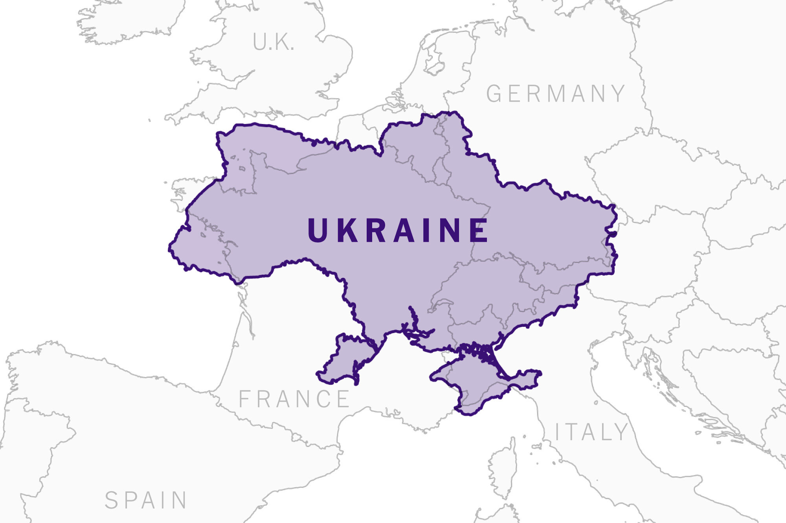

Контактна інформація
- Телефон: +38 (044) 123-4567
- Email: info@lostsockdetectives.ua
- Адреса: м. Житоми, вул. Шкарпетянська, 1
"Знаходимо навіть те, що здається втраченим назавжди"
Знайдіть нас

Скільки часу триває розслідування?
Час, необхідний для розслідування, залежить від складності справи. Зазвичай, розслідування триває від кількох днів до кількох тижнів.
Чи можу я відслідковувати хід розслідування?
Так, ви можете відслідковувати хід розслідування через регулярні звіти, які ми надсилаємо нашим клієнтам. Ми також можемо організувати зустрічі для обговорення результатів.
Які послуги ви надаєте?
Ми надаємо широкий спектр послуг, включаючи розшук втрачених шкарпеток, консультації з безпеки, приватні розслідування та багато іншого.